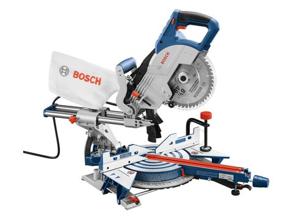

Bosch CM8S 8-1/2″ Single-Bevel Sliding Compound Miter Saw
This is the first time Bosch’s compact slider has made our log. It’s $405.15 this morning, shipped and sold by Amazon, against a $565 list price, and Amazon showed only three left when we checked, so it may not last the day. ToolBuck’s Amazon price history puts last year’s Black Friday low at $489, so this is about $84 under that. The 8-1/2″ blade and sliding rails give a 12-1/4″ crosscut at 0° and 8″ at 45°. It cuts crown up to 3-1/2″ and base molding up to 2-3/4″ standing upright. Miters run 52° left to 60° right with 10 detents. The bevel lock and bevel stops sit on the side of the saw, so you don’t reach behind the blade to change them, and the base extensions open to 29″ of support. At 37 lb with a top carry handle, it lifts onto a bench or stand with one hand, which suits a small shop that shares space with a car. It’s single-bevel, so you flip the work for opposite bevels. It takes an 8-1/2″ blade, not a 10″ or 12″ one.
SHOP PRICE: $405.15
LIST: $565